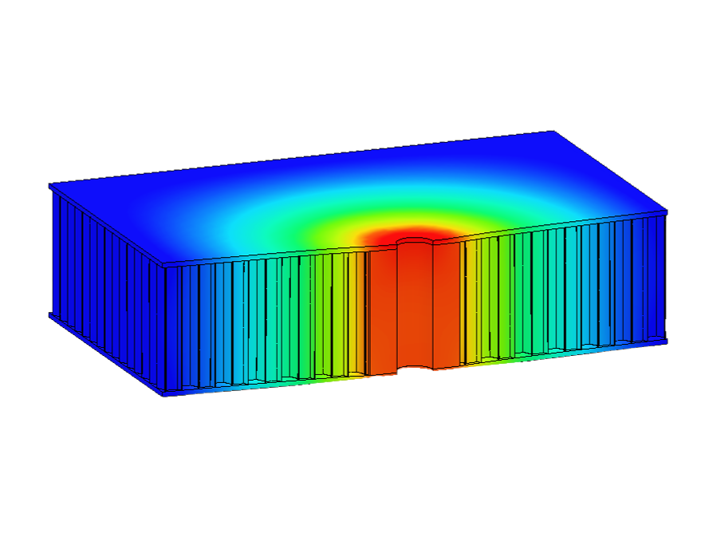
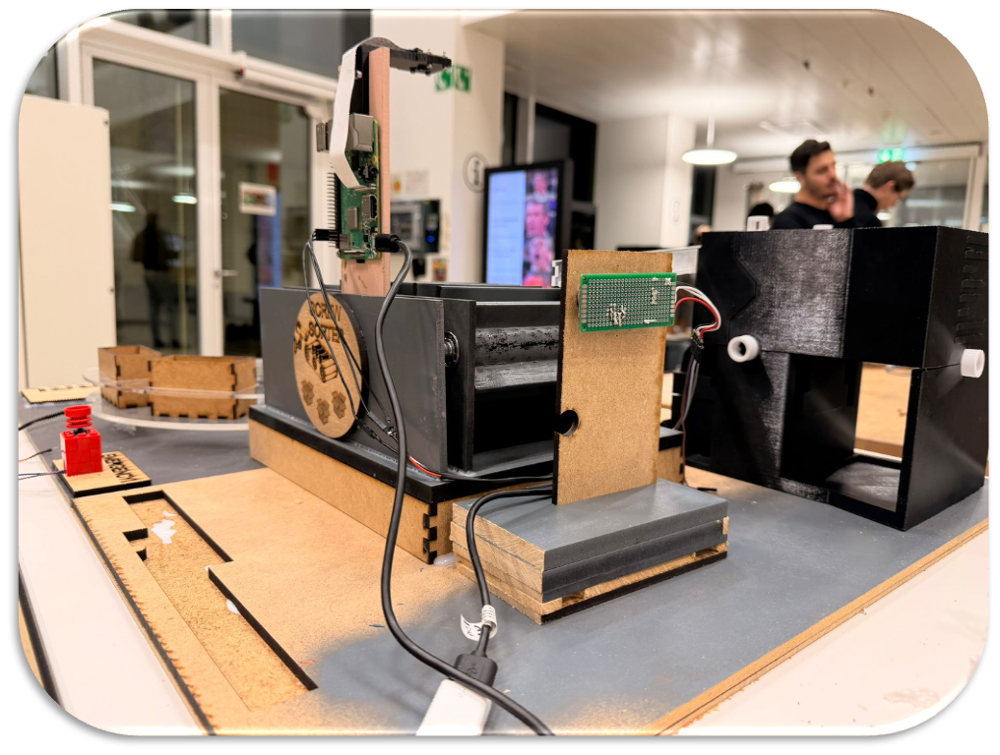

Bachelor Thesis
Monocoque insert analysis
Analysis and redesign of production and post-production monocoque inserts, supported by full-structure simulations including carbon, aluminium, inserts and reinforcements.
Welcome to my portfolio. I am Mathélyo Favre-Réguillon, a Mechanical Engineering Master’s student at EPFL, focused on high-performance engineering, composites, and lightweight structures. I am driven by both technical challenges and project leadership, aiming to turn complex ideas into efficient, well-executed solutions.

I am currently a first-year Master’s student in Mechanical Engineering at EPFL and I am looking for a 6 to 12-month internship in engineering, design, simulation, manufacturing or high-performance systems.
My academic and technical journey has been shaped by a growing interest in engineering, design, manufacturing and high-performance systems. Here is a timeline of my path from 2018 to today.
Sci

Scientific academic track with increasing attraction to mathematics, physics and technical problem solving.

Sci

Development of strong foundations in mechanics, materials, design, manufacturing, simulation and project-based engineering.

Progression from technical contributor to broader responsibilities in monocoque manufacturing, integration, organization and leadership.

Specialization in Design and Production with a minor in Materials Science, with a strong focus on high-performance engineering and technical project execution.
EPFL Racing Team is a student-led organization of around 100 members developing a fully autonomous and electric race car. Over two years in the team, I progressed from Chassis and Cockpit team member to Vice-President and Head of Monocoque and Layup Manufacturing.
During my first year, I contributed to the structural development of the car and to the production of the season’s carbon monocoque. I also designed, manufactured and integrated the full electrical housing system, focusing on materials selection, volume optimization and sealing.
In my second year, I took on wider responsibilities across logistics, organization, rollout planning, testing and competitions, while also leading the production of the new carbon monocoque and the mechanical integration of electronics.

Analysis and redesign of production and post-production monocoque inserts, supported by full-structure simulations including carbon, aluminium, inserts and reinforcements.

Low-cost screw sorting prototype based on a single-camera vision system, optimized for ease of integration and accessibility for non-expert users.

Robotic end-effector for raspberry picking with Arduino-based automation, pressure-controlled gripping and ripeness detection for gentle harvesting.

Early CATIA project covering kinematics, dynamic studies, structural design, fasteners, documentation and timeline-driven team delivery.

End-to-end automation of Sudoku solving from a photo using C for image recognition, MATLAB for solving and LabVIEW for orchestration and interface.

Detailed simulation workflow in 3DEXPERIENCE covering mesh selection, convergence analysis and tension, torsion and shear load cases.

Experimental project using a simplified trampoline-ball system to study deformation fields, acceleration and oscillation frequency.

Thin-film quality assessment focused on contamination, stoichiometry and interface integrity for silicon nitride coatings on silicon wafers.

Thermo-Calc based study of Al–Ce–Sc alloy design for high-temperature strength retention beyond conventional aluminium alloys.
Design, manufacturing and integration of the electrical housing system for the race car, with attention to packaging, sealing and structural constraints.

Redesign of a light bulb with a stronger focus on circularity, modularity, material optimization and improved sustainability across the product lifecycle.
Development of a parametric lattice generation and simulation workflow to optimize lightweight structures through numerical modeling and performance analysis.
Semester project focused on measurement, signal acquisition and experimental data processing for engineering analysis and system understanding.
My profile combines technical engineering skills, hands-on prototyping experience and strong interpersonal abilities. I enjoy moving from concept to execution, whether through design, simulation, manufacturing or teamwork in demanding environments.
Ability to analyze complex situations, identify key issues and make structured engineering decisions.
Strong interest in understanding technical challenges and developing practical, efficient and robust solutions.
Used to collaborating in multidisciplinary teams with shared objectives, deadlines and technical constraints.
Motivated by learning new methods, exploring new tools and improving both technical knowledge and execution.
Comfortable working in demanding environments with tight schedules, multiple priorities and high expectations.
Strong ability to take responsibility for a task or project and move it forward with consistency and commitment.
3D design, assemblies, technical development and mechanical project work.
Mechanical design, part development and prototyping-oriented modeling.
Fast design iterations, integrated engineering workflow and project development.
Finite element studies, mesh strategy, convergence analysis and structural investigations.
Computational materials work and alloy behavior analysis.
Scientific computing, numerical analysis and engineering problem solving.
Automation, data processing, engineering workflows and technical scripting.
Structured programming for problem solving and low-level technical applications.
Algorithm development, calculation and technical modeling.
Experimental interfacing, workflow control and system orchestration.
Embedded prototyping, sensor integration and experimental control systems.
Rapid prototyping, test parts and fast design validation loops.
Electromechanical prototyping, sensor testing and hardware experimentation.
Hands-on manufacturing and assembly in practical engineering environments.
Layup processes, monocoque production and lightweight structural fabrication.
System packaging, structural constraints and design-for-integration thinking.
Practical verification, iteration and engineering performance follow-up.

Built from the content and visual structure of the original portfolio PDF.